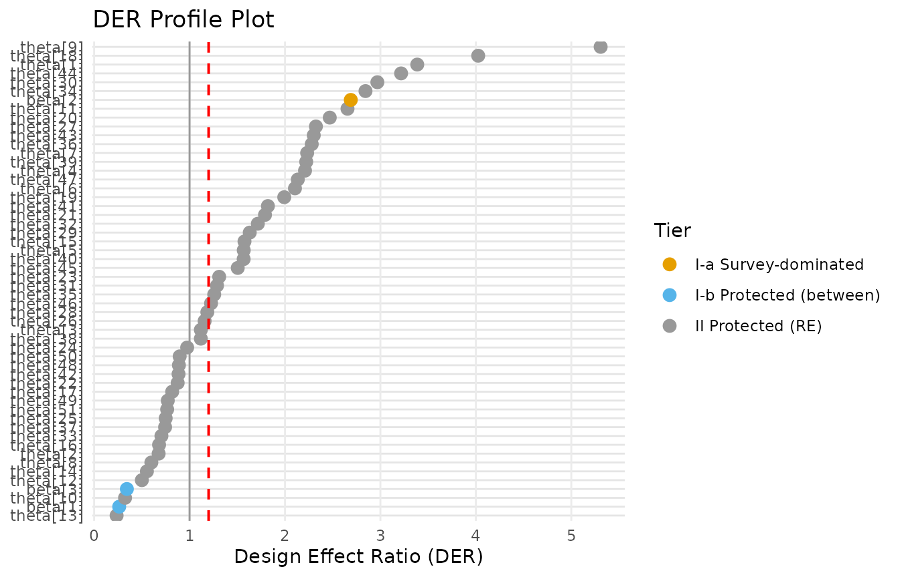

Getting Started with svyder
JoonHo Lee
2026-07-04
Source:vignettes/getting-started.Rmd
getting-started.RmdOverview
This vignette takes you from a matrix of posterior draws to a set of design-corrected draws in a single function call. Working on bundled data, you will run the whole compute -> classify -> correct pipeline in about five minutes: run the diagnostic, read its report, pull the results into a tidy table, draw one picture, and extract corrected posterior draws you can hand straight to downstream code. No Stan installation is required — the demo datasets ship with precomputed draws.
It is written for practitioners who fit Bayesian hierarchical models to complex survey data and want to know, parameter by parameter, whether the survey design has been properly accounted for. You do not need to understand the sandwich variance or the classification theory to use the package; this vignette stays on the happy path and links out to the details.
We cover, in order:
- Why DER? The problem the diagnostic solves.
- Installation and the five-minute demo (one call).
- Reading the printed report, the tidy table, and the model-level glance.
- One plot, then extracting corrected draws.
- The one decision you must make, and where to go next.
The problem: why DER?
When you fit a Bayesian hierarchical model to survey data with a pseudo-posterior (plugging survey weights into the likelihood), the resulting posterior does not know about the sampling design. For some parameters this matters a great deal: the posterior is too narrow, understating the true design uncertainty, and any interval you report is overconfident. For other parameters — especially the random effects that hierarchical shrinkage already protects — the posterior is fine, and “correcting” it would wrongly narrow it and throw away the very shrinkage that makes the model work.
So neither extreme is safe. Ignoring the design leaves some parameters overconfident; a blanket correction applied to every parameter damages the ones that were already calibrated.
Key insight. The Design Effect Ratio (DER) is a per-parameter number that tells you which parameters are which. DER > 1 means the posterior understates design uncertainty and should be widened; DER \approx 1 means leave it alone; DER < 1 means a correction would harm it. svyder computes a DER for every parameter, flags only those above a threshold, and corrects only the flagged ones — leaving the rest untouched.
Formally, the DER of parameter k is
the ratio of its design-based sandwich variance (for a declared
variance target) to its model-based MCMC posterior variance, \mathrm{DER}_k =
\frac{[V_{\text{target}}]_{kk}}{[\Sigma_{\text{MCMC}}]_{kk}}. You
will not need that formula to follow along — see
vignette("theory-der") for the full story — but it is the
quantity every number below refers to.
The 5-minute demo
Load the bundled dataset. nsece_demo is a synthetic list
modelled on the 2019 National Survey of Early Care and Education,
carrying everything the diagnostic needs:
data(nsece_demo)The pieces you will pass in are:
-
draws— a 4000 \times 54 matrix of posterior draws (one column per parameter: 3 fixed effects, 51 random effects for the states, plus a hyperparameter). -
y,X— the binary outcome (N = 6785 providers) and the design matrix with three columns:intercept,poverty_cwc,tiered_reim. -
group— the grouping factor, J = 51 states. -
weights— the survey weights. -
psu— the design’s primary sampling units: 644 PSUs. This is the aggregation unit you will pass ascluster.
That is a moderately large, genuinely clustered survey: 6,785 observations nested in 51 states, drawn from 644 PSUs, with 3 fixed effects. One call runs the entire pipeline:
result <- der_diagnose(
nsece_demo$draws,
y = nsece_demo$y,
X = nsece_demo$X,
group = nsece_demo$group,
weights = nsece_demo$weights,
cluster = nsece_demo$psu, # design PSUs = the aggregation unit
family = "binomial",
sigma_theta = nsece_demo$sigma_theta,
param_types = nsece_demo$param_types
)der_diagnose() computes a DER for every parameter,
classifies each into a tier, and (by default) applies the selective
correction — all in one step. The returned object is everything you need
for the rest of this vignette.
Reading the output
Print it to get the headline diagnostic:
print(result)
#> svyder diagnostic (54 parameters)
#> Family: binomial | N = 6785 | J = 51
#> Target: 644 cluster(s) | meat: centered, DF-corrected | weights: unit_mean
#> DER range: [0.235, 5.308]
#> Tier III (DER undefined): sigma_theta
#> Threshold (tau): 1.20
#> Flagged: 30 / 54 (55.6%)
#>
#> Flagged parameters:
#> beta[2] DER = 2.689 [I-a] -> CORRECT
#> theta[1] DER = 3.386 [II] -> CORRECT
#> theta[4] DER = 2.210 [II] -> CORRECT
#> theta[5] DER = 1.568 [II] -> CORRECT
#> theta[6] DER = 2.104 [II] -> CORRECT
#> theta[7] DER = 2.232 [II] -> CORRECT
#> theta[9] DER = 5.308 [II] -> CORRECT
#> theta[11] DER = 2.655 [II] -> CORRECT
#> theta[15] DER = 1.576 [II] -> CORRECT
#> theta[18] DER = 4.025 [II] -> CORRECT
#> ... and 20 more
#>
#> Correction applied: 30 parameter(s) rescaled
#> Compute time: 0.073 secRead this top to bottom:
-
54 parameters,
binomialfamily,N = 6785,J = 51— confirms the model svyder saw. -
Target: 644 cluster(s) — the design-based target
you declared with
cluster = nsece_demo$psu. The meat is centered and DF-corrected and weights use the defaultunit_meanconvention; these are the v0.2.0 defaults. - DER range: [0.235, 5.308] — across all parameters, the smallest DER is 0.235 (well below 1: correcting it would narrow the posterior) and the largest is 5.308 (badly understated).
- Tier III (DER undefined): sigma_theta — the variance hyperparameter is excluded by construction. It is reported but never certified as corrected.
- Flagged: 30 / 54 (55.6%) at the default threshold \tau = 1.2. These are the parameters whose DER exceeds the threshold; only these are corrected.
The flagged list previews the biggest offenders (beta[2]
and a run of state random effects) and confirms
Correction applied: 30 parameter(s) rescaled.
Note. Better than half the parameters here are flagged, but that is a property of this design and this target, not a universal fact. Switch the aggregation unit and the count changes — see “The one decision you must make” below.
The tidy table
For a one-row-per-parameter data frame, use tidy():
td <- tidy(result)
head(td, 3)
#> term estimate std.error der tier action flagged
#> beta[1] beta[1] 0.2498445 0.14735061 0.2626885 I-b retain FALSE
#> beta[2] beta[2] -0.1494408 0.02604573 2.6894416 I-a CORRECT TRUE
#> beta[3] beta[3] 0.1610078 0.20239837 0.3430527 I-b retain FALSE
#> scale_factor
#> beta[1] 1.000000
#> beta[2] 1.639952
#> beta[3] 1.000000The columns are the term, its posterior estimate and
std.error, its der, the assigned
tier, the action taken, whether it was
flagged, and the scale_factor applied by the
correction. The first three rows are the fixed effects. Reading
them:
| Parameter | DER | Tier | Action |
|---|---|---|---|
| beta[1] (intercept) | 0.263 | I-b | retain |
| beta[2] (poverty_cwc) | 2.689 | I-a | CORRECT |
| beta[3] (tiered_reim) | 0.343 | I-b | retain |
-
beta[2]ispoverty_cwc(the second column ofX, hencebeta[2]): DER 2.689, classified Tier I-a, and flagged for correction. This is a within-group covariate — it varies among providers inside each state — so the survey design bears on it fully, and its posterior was understating uncertainty by a factor near the design effect. -
beta[1](intercept), DER 0.263, andbeta[3](tiered_reim), DER 0.343, are both Tier I-b and retained. These are between-group quantities: hierarchical shrinkage already shields them, their DERs sit well below 1, and correcting them would wrongly narrow already-honest intervals.
So of the three fixed effects, only poverty is corrected. The remaining 29 flagged parameters are state random effects (Tier II).
Model-level glance
For the aggregate picture in one row, use glance():
glance(result)
#> n_params n_flagged pct_flagged tau family n_obs n_groups mean_deff
#> 1 54 30 55.55556 1.2 binomial 6785 51 2.59527
#> mean_B der_min der_max
#> 1 0.8543053 0.2354213 5.307734This reports the totals you would put in a methods paragraph:
n_params, n_flagged and
pct_flagged, the threshold tau, the model
family and dimensions, and design summaries — mean_deff
around 2.6 (the Kish design effect is elevated here),
mean_B around 0.85, and the DER range [0.235, 5.308].
One picture
The built-in profile plot lays every parameter out by DER, grouped by tier, with the DER = 1 and threshold reference lines drawn in:
plot(result, type = "profile")
Read it at a glance: points to the right of the threshold line are
flagged; points to the left of DER = 1
are the shrinkage-protected parameters a blanket correction would have
harmed. poverty_cwc sits out to the right; the retained
fixed effects and many random effects sit to the left.
Extracting corrected draws
To feed downstream code, pull out the corrected posterior draws with
as.matrix():
You get a matrix the same shape as the input draws (4000 \times 54), but with the flagged parameters’ columns rescaled to their declared variance target. The correction is selective in the strictest sense:
Key insight. Unflagged parameters are left bitwise unchanged — their columns in the corrected matrix are identical to the originals, not merely rescaled by a factor of one. Only the 30 flagged parameters are touched. You can use
correctedanywhere you would have used the original draws.
You can confirm the guarantee directly on any retained parameter, for
example the intercept (beta[1], column 1):
identical(corrected[, 1], nsece_demo$draws[, 1])
#> [1] TRUEThe one decision you must make
There is exactly one choice you cannot skip, and you already made it
above: cluster is required and has no
default. In the demo you set
cluster = nsece_demo$psu, declaring a design-based
target built from the survey’s 644 PSUs.
That choice is not a formality — it is part of the estimand. The
aggregation unit defines which variance target the DER is
measured against, and the DER of a parameter changes materially
depending on it. Setting cluster = group instead would
declare a model-aligned target and give you different DERs, a
different flagged set, and a different correction. On this demo the
design-PSU target flags 30 of 54 parameters; the model-group target
flags 25 of 54.
Note. Always pass
cluster =explicitly and choose it deliberately. Do not use the olderpsu =argument — it is deprecated and emits a warning. Which target to declare is the subject of its own vignette.
Deciding between the design-PSU and model-group targets — and the
related normalize, strata, and
cluster_strata options — is covered in Choosing the Variance Target.
What’s next?
You have run the whole pipeline in one call. From here:
-
Choosing the Variance Target
— the one decision above, in depth: design-PSU vs model-group, weight
conventions, stratification, and
der_compare(). -
The Compute–Classify–Correct Pipeline —
split
der_diagnose()intoder_compute(),der_classify(), andder_correct()for fine-grained control, tune the threshold withder_sensitivity(), and see why blanket correction is harmful. - For the underlying concepts — what a DER is, the sandwich
target, and the tier theory — see
vignette("theory-der").